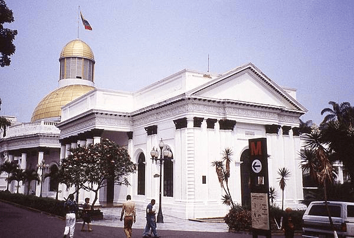
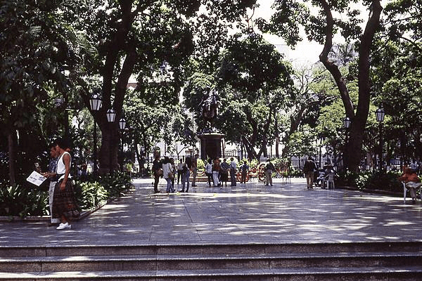

In 1830, Venezuela was one of three countries that emerged from the collapse of Gran Colombia. During most of the 20th century, Venezuela was ruled by compassionate military strongmen who promoted the oil industry. Starting in 1959, the government would then begin to be elected democratically.
Ever since Hugo Chavez took over, every election has been fraudulent. Under his power and that of his successor, Nicholas Maduro, the executive branch has exercised authoritarian control over the country. Currently the National Assembly is the only democratic institution.
The Federal Legislative Palace, house of the National Assembly, in Caracas, Venezuela (Photo by CIA World Factbook)
It is the National Assembly President Juan Guaido who is recognized by over 50 countries as the interim President of Venezuela. However, Maduro still has control over all other institutions and is supported by the armed forces. The current ruling party's economic policies have influenced the expropriation of major enterprises, strict currency exchange and price controls which discourage investment and production in the private sector, thus forcing the government to rely heavily on the petroleum industry for revenues.
Geography
Location
Venezuela sits on the northern part of South America, in between Colombia and Guyana. It is bordered by the Caribbean Sea and the North Atlantic Ocean.
Land Boundaries
Bordering Countries
Country
Distance (km)
Brazil
2,137
Colombia
2,341
Guyana
789
Environment
Current Issues:
sewage pollution of Lago de Valencia
oil and urban pollution of Lago de Maracaibo
deforestation and soil degregation
urban and industrial pollution along the Caribbean coast
the rainforest ecosystem is threatened by irresponsible mining operations
People and Society
Venezuela has a population of 29,069,153 people. Consisting of ethnic groups such as Italian, Portuguese, Arab, German, African and Indigenous. With the age groups of 0-14 years (26%) and 24-54 years (41%) being the most dominant groups of the population.
While the Chavez administration was in control of the country, social investment reduced poverty from nearly 50% in 2019 to close to 27% in 2011. However, under his rule, many people left the country. According to reports more than one million middle- and upper-class Venezuelans have emmigrated.
This is largely due to a repressive political system, lack of economic opportunities, steep inflation, a high crime rate, and corruption. It's also estimated, that as of March 2020, 5 million Venezuelans were refugees or migrants worldwide. 80% of those people are currently taking refuge in Latin America and the Caribbean.
Government
The Republic Bolivariana de Venezuela gained its independence from Spain on . The country has a total of 23 states, 1 capital district, and 1 federal dependency. Caracas is the capital of Venezuela.
Simon Bolivar Statue, in Plaza Bolivar, in Caracas, Venezuela (Photo by CIA World Factbook)
Although the United States recognize Juan Guaido as the interim President of Venezuela, it is President Nicholas Maduro who is the chief of state. Maduro was elected in 2018 due to electoral fraud and because a large number of the opposition boycotted the election. A president is elected every 6-years by a majority popular vote; the next elections are set to take place in 2024.